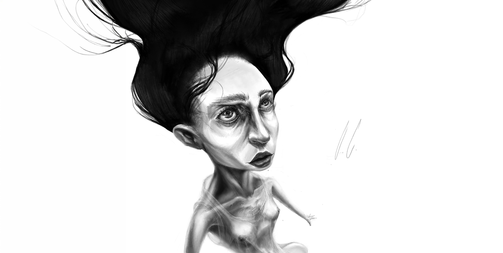
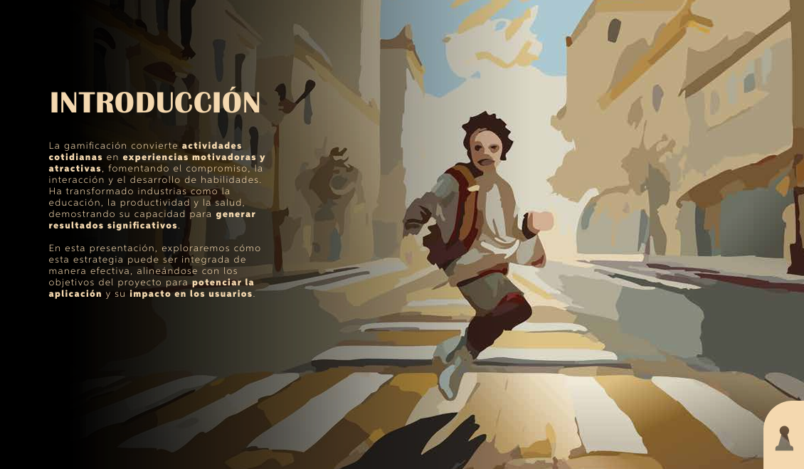
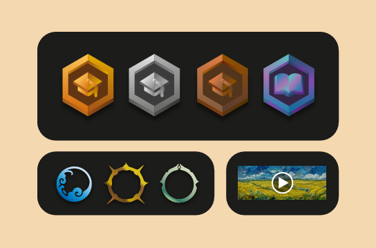
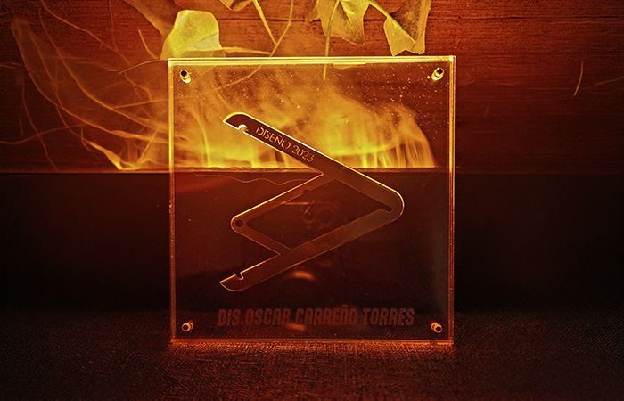
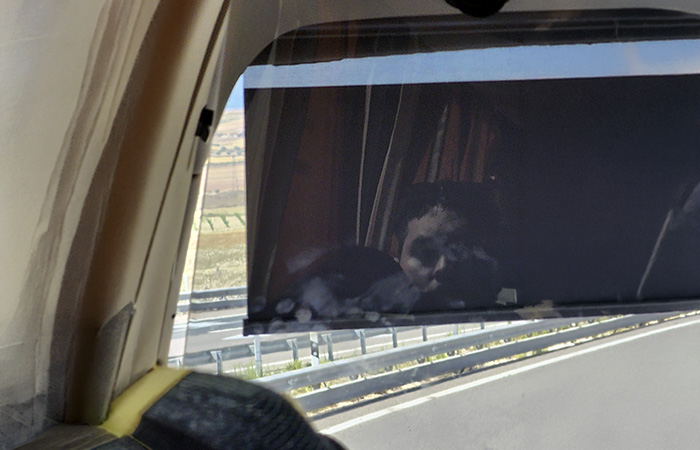

TO FRAME
OSCAR
IT ALL .
CARREÑO
Scroll
OSCAR
CARREÑO
CRAFTING
STORIES
THROUGH
SHAPES,
LINES
AND
PICTURES.
MEET
ME
IN
THE
JOURNEY.






Who am I. I was born in Guadalajara, Mexico (2000), I pursued a degree in Design,not merely as a craft-focused discipline, but as a strategic framework for architecting sustainable solutions. My approach is rooted in uncovering the latent needs buried within complex layers of research to build meaningful user experiences.
What drives me. My background divides between Brand Strategy and Product Design. Experience at a specialized marketing agency sharpened my understanding of brand positioning teaching me to desing with an intention. I pivoted toward scalable UI and rigorous UX Research.
UX/UI Design Partner | Ulab ITESO
Guadalajara, Jal
UX research | Branding systems | Wireframes | User interfaces for SaaS, B2B, B2C, and CMS | Usability analysis using focus groups and behavioral labs.
Senior Designer | Vadeto Group
Guadalajara, Jal
Lead design decisions | Internal and external communication assets | Assets for Amazon, first-party webstores, and third-party marketplaces | Product packaging | Product photography and video editing | Content creation.
Creative Designer | The Right Position Marketing
Guadalajara, Jal
Content creation | Design banners, packaging, promotional materials, and print formats | Design products, stands, logos, and complete branding | Gameboard design | Creative concepts for digital marketing and BTL.
Bachelor of Design | ITESO
Guadalajara, Jal
_Create content for diverse social media platforms.
_Design banners, packaging, promotional materials, and print formats.
_Design products, stands, logos, and complete branding.
_Gameboard design and development.
_Develop creative concepts for digital marketing and BTL campaigns.
Systems Before Surfaces
Structure first, beauty follows.
Empathy is the Brief
Design for people, not for briefs.
Restraint as Craft
What you leave out defines the rest.
Story Over Style
No narrative, no design.



